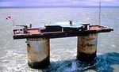

De: La Frikipedia, la enciclopedia extremadamente seria.
De: La Frikipedia, la enciclopedia extremadamente seria. De: La Frikipedia, la enciclopedia extremadamente seria.
| De la serie Países del planeta tierra: | |||||
| Silandia | |||||
|---|---|---|---|---|---|
| |||||
| Lema: En el mar no pagamos impuestos | |||||
| Himno: Argh! Argh! Argh!
| |||||
| 
| |||||
| Capital | Londres | ||||
| Mayor ciudad | Londres | ||||
| Lenguas oficiales | Inglés | ||||
| Gobierno | Principado Monohabitante | ||||
| Príncipe de Silandia | Roy de Silandia | ||||
| Área | Algún lugar de la mancha | ||||
| Población | Confidencial | ||||
| Moneda | Dólar Silandés | ||||
| Zona horaria | La misma de Londres | ||||
| Dominio Internet | .uk | ||||
| Código telefónico | Confidencial (no tienen)
| ||||
| Único país invicto y no pertenecienta a alguna organización internacional. | |||||
Sealand fue construída por los ingleses durante la Segunda Guerra Mundial, haciéndolo un país bélico de nacimiento. En su corta historia (a partir de que se crea como...digamos isla) Sealand ha sido objeto de múltiples conflictos internacionales con Inglaterra y Alemania. Inglaterra intentó defender sus derechos en Sealand al no querer que sus habitantes quisieran posteriormente declarar países soberanos e independientes sus patios traseros. Sealand tiene pasaportes, monedas y estampillas propias, teniendo valor únicamente para coleccionistas de esas idioteces y para su Roy.
Terroristas Nazis intentaron posteriormente hacer un golpe de estado al país, pues descubrieron que esa antigua base militar y reciente isla fue la causante de la muerte de sus compatriotas durante el gobierno de su Dios Hitler. Los terroristas mantuvieron capturado al hijo del Roy hasta que llego su padre, quien los sacó por beber cervezas y fumar tabaco en su país, lo cual está prohibido por su constitución.
Después de vencer en todos los conflictos legales y militares en su historia, manteniendo una racha invicta, Sealand creció como uno de los países más prósperos de Europa, teniendo su población uno de los mejores estándares de nivel de vida del continente. Su éxito para combatir la migración es la prohibición del alcohol y el tabaco.
En el 2006 Sealand fue atacado por las malévolas llamas del infierno, dirigidas por SATANAS II. A comienzos de 2007 sufre un nuevo ataque, esta vez a cargo de la República del Papel, su principal enemigo. Dicho ataque se salda con la pérdida de los planos del "Frankostein", la que iba a ser el arma definitiva de los Silandeses, un clon del general Franco (ex-caudillo de Espiña) mejorado genéticamente.
Actualmente, el pequeño principado se encuentra a la espera de la cooperación mundial para salir adelante. Por el momento, los aliados de Sealand son únicamente los accionistas de HavenCo, quienes pretende construir un paraiso tropical ahí.
  Imperios de Europa Imperios de Europa
|
|---|
| Eslovaquia |
Autor(es):